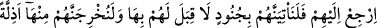

Dünya malı, güçsüz kuşlar için bir tuzaktır
Âhiret mülkü ise şerefli kuşların tuzağıdır
“Hediyenizle (ben değil) siz sevinirsiniz.” Yâni bilakis siz kendinize hediye olunan
şeylerle malınız çoğaldığı için onun sevdâsıyla sevinirsiniz. Çünkü siz dünya
hayatından sadece görüneni bilirsiniz. Anlatılan kıssaya uygun düşen mânâ budur.
el-İrşâd’da der ki: “Âyetin bu kısmı, yukarıda zikredilen mal ile yardımı reddetmeyi
bir tarafa bırakıp kendisine övünmek, başa kakmak ve ona güvenip dayanmak için
verdikleri hediye ile böbürlenmelerini kınamaya geçiştir. Nitekim bahsi geçen hokka,
boncuk, köle ve câriyelerin şeklinin değiştirilmesi ve diğer şeyler bunu göstermektedir.
Fakir (Bursevî) der ki: Burada şu husus da vardır: Bu elçi ve heyet Allah’ın
Süleyman (a.s.)’a ihsan ettiği büyük mülkü/saltanatı ve çok malı görünce, ellerindeki
hediyeleri küçümsediler. Hatta yanlarındaki altın ve gümüş külçeleri atmaya
niyetlendiler. Ancak hediyenin emânet oluşu bunu yapmalarına mâni oldu. Sonra hokka
ve diğerleri hediye olarak değil Süleyman (a.s.)’ı denemek için olduğuna göre onlar
hediyelerini nasıl onun başına kakacak ve onlarla övüneceklerdi. Anla.
et-Te’vîlâtü’n-Necmiyye’de der ki: “Hediyenin kalblerin meyline sebep olduğuna
işâret etmektedir. Ancak dîn ehli, dünyevî birçok menfaatin karşısında dînî bir husus ile
yüzyüze geldiklerinde, din tarafını dünyevî birçok menfaat tarafına tercih ederler.
Dünya malı fânî olduğu için çok da olsa onu az görürler. Bâkî olduğu için az da olsa din
işlerini çok görürler. Nitekim Süleyman (a.s.) da böyle yapmıştır. Elçi hediye ile
gelince çok olduğu halde onu az buldu ve ‘Allah’ın bana ihsan ettiği dînin kemâlât,
âhiretteki Allah katındaki yakınlıklar ve dereceler sizin verdiğiniz dünya ve
ziynetlerinden daha hayırlıdır. Ancak siz, yâni ehl-i dünyadan sizin gibiler, nefislerinin
hasisliğinden ve bâkî uhrevî saâdetten habersiz olduğundan bu fânî dünyevî hediyeniz
gibi şeylerle sevinir.’ dedi.
37. (Ey elçi!) Onlara dön; iyi bilsinler ki, kendilerine asla karşı koyamayacakları
ordularla gelir, onları muhakkak surette hor ve hakir halde oradan çıkarırız!
Ey elçi! “Onlara” Belkıs’a ve kavmine hediyeleri ile “dön;” ki ehl-i dînin geçici
dünyalıklarla aldatılmadığını, onların murâdının sâdece İslâm olduğunu bilsinler.
Müslümanlar ve mü’minler olarak gelsinler. Aksi halde “iyi bilsinler ki,” Allah’a
yemin olsun ki “kendilerine asla karşı koyamayacakları” karşı durmaya takat
edemeyecekleri ve karşılık vermeye güç yetiremeyecekleri cinlerden, insanlardan ve
ilâhi yardımdan “ordularla gelir”